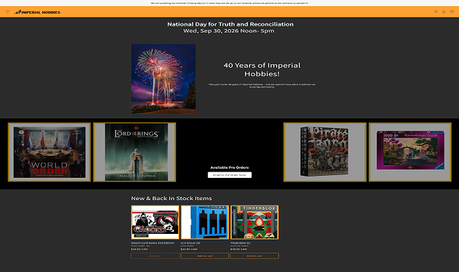
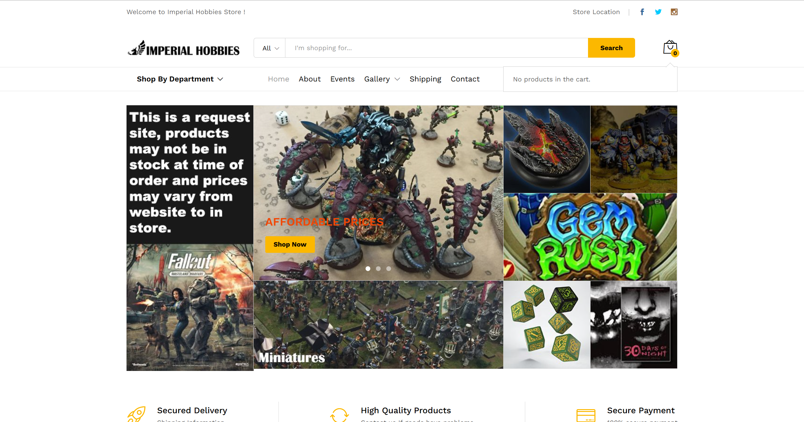
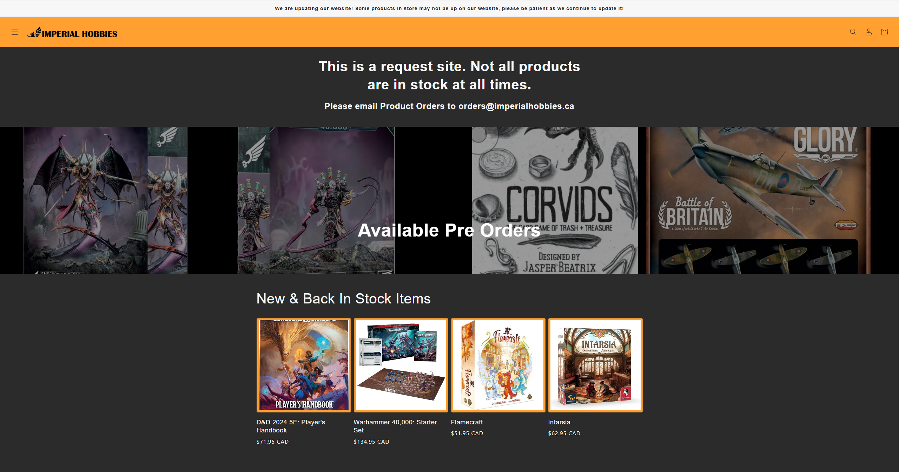
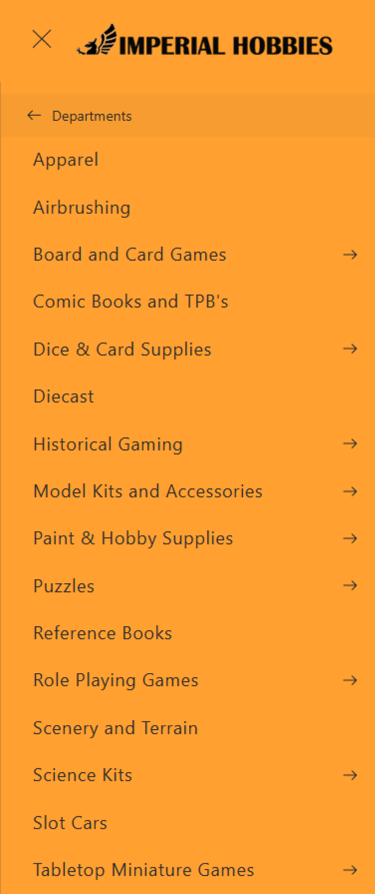

Deep Catalogue Anxiety
Over 40,000 SKUs made it hard to tell which products were available, out of stock, or discontinued.
UX / UI / Web Design
Modernizing one of Western Canada's oldest hobby stores, updating the website to be a faster, easier, easier to navigate webstore while honouring it's place in the community.

40,000+
Product SKUS Organized
80%
Additional Conversion
60%
Customer Order Increase
01 / Catalyst

Before 2025 Redesign
After 2025 Redesign

02 / Challenge
Over 40,000 SKUs made it hard to tell which products were available, out of stock, or discontinued.
Staff struggled to update products, because the platform wasn't built for storefronts.
Customers couldn't check stock online, and items were hard to find across categories.
03 / Timeline
Adjusted new automated categories and determined 200+ products and tags.
Create prototypes for website design that match clients desires for the visual space and allow improvements from prior design.
Match branding of the business, ensuring legibility and navigation access and accessibility site-wide.
Performed rigorous testing to find potential faults and errors with both customers, employees, as well as those not in the hobby space.
Made final edits and launched the site. Provided maintenance post launch for approximately 2 weeks to assist with on-boarding of staff and help with issues that arose.
04 / Payoff

Decision 02
Hobbyists demand highly technical product specifications before purchasing. We designed a clear “Spec Sheet” module directly on the product detail page, calling out critical data points like scale ratios, railroad gauges, material types, skill level tiers, and recommended auxiliary items. This directly reduced a major dropoff point in the checkout funnel.


Decision 03
Hobbyists often purchase during active gaming sessions inside regional clubs or conventions. We restructured the e-commerce purchase loop specifically for mobile browsers, introducing single-tap checkout options, instant digital receipt passes, and a clean pickup locker scheduling interface bridged the gap between convenience and the brick-and-mortar storefront.
04 / Responsive View


05 / The Outcome
35%
Bounce Rate Reduction+114%
Mobile Revenue Boost14s
Avg. Search-to-Checkout